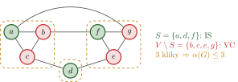
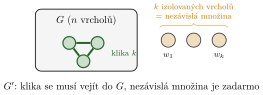
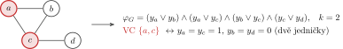

8.7 Úlohy navíc¶
Většina jsou důkazy NP-úplnosti (typ 4 testu): krátké redukce z \(\href{ch-is-nezavisla-mnozina.html#prob-is}{\class{woo-pk-prob-is}{\prob{IS}}}\), \(\href{ch-is-vertex-cover.html#prob-vc}{\class{woo-pk-prob-vc}{\prob{VC}}}\) a \(\href{ch-is-is-clique.html#prob-cliquer}{\class{woo-pk-prob-cliquer}{\prob{Clique}}}\) typu „zobecnění“, „doplnění grafu“ a „přestrojení“ jako ve cvičení 8.6, přímá redukce z \(\href{../ch-sat/ch-sat-sat-3-sat.html#red-sat3sat}{\class{woo-pk-pojem-3sat}{\prob{3-SAT}}}\) (úloha 8.2) a v úloze 8.8 úprava grafu, která zachová těžkost i na užší třídě grafů. Úloha 8.3 je self-redukce (typ 2). Pododdíl 8.7.4 přidává dvě úlohy z jiné sbírky: hledání největší nezávislé množiny pomocí orákula a NP-úplnost \(\href{ch-is-vc-hitting-set.html#prob-hs}{\class{woo-pk-prob-hs}{\prob{Hitting Set}}}\).
Neoficiální úlohy
Úlohy v tomto oddílu nejsou oficiální zadání předmětu. Jsou to procvičovací úlohy navíc k látce kapitoly; všechny redukce byly ověřeny programem hrubou silou (stovky náhodných grafů do 7 vrcholů a formulí do 4 klauzulí, obě odpovědi ANO i NE), u úlohy 8.8 i to, že \(\alpha(G')=\alpha(G)+|E|\) a že \(G'\) je bez trojúhelníků (400 náhodných grafů). Algoritmus z úlohy 8.3 jsme porovnali s hrubou silou na 1500 náhodných grafech do 7 vrcholů (orákulum nahrazené hrubou silou); konkrétní čísla a průběhy spočítal skript, obecné důkazy jsou psané ručně. U úloh 8.9 a 8.10 jsme algoritmus s orákulem (orákulum nahrazené hrubou silou) porovnali s hrubou silou na 3000 náhodných grafech do 8 vrcholů a obě redukce na \(\href{ch-is-vc-hitting-set.html#prob-hs}{\class{woo-pk-prob-hs}{\prob{Hitting Set}}}\) na 1500 náhodných instancích; průběh v úloze 8.9 b) spočítal skript.
8.7.1 Rozcvička¶
Úloha 8.1 (částečné vrcholové pokrytí)
Problém \(\href{#un-8-1}{\class{woo-pk-pojem-partial-vc}{\prob{Partial VC}}}\):
Vstup: graf \(G=(V,E)\) a čísla \(k\) a \(t\).
Otázka: existuje množina \(C\subseteq V\), \(|C|\le k\), která pokrývá aspoň \(t\) hran (aspoň \(t\) hran má v \(C\) aspoň jeden konec)?
Dokažte, že \(\href{#un-8-1}{\class{woo-pk-pojem-partial-vc}{\prob{Partial VC}}}\) je NP-úplný. Nápověda: převádějte z problému Vertex Cover.
Řešení
Redukce: \(\href{ch-is-vertex-cover.html#prob-vc}{\class{woo-pk-prob-vc}{\prob{VC}}} \mathrel{\href{../ch-redukce/ch-redukce-jak-porovnat-slozitost-dvou-problemu.html#def-redukce}{\class{woo-pk-def-redukce}{\redp}}} \href{#un-8-1}{\class{woo-pk-pojem-partial-vc}{\prob{Partial VC}}}\), instance \((G,c)\) \(\mapsto\) \((G,\ k=c,\ t=|E|)\).
1. \(\href{#un-8-1}{\class{woo-pk-pojem-partial-vc}{\prob{Partial VC}}}\) je v \(\href{../ch-np/ch-np-tridy-nedeterministicke-casove-slozitosti.html#def-ntime}{\class{woo-pk-def-ntime}{\NP}}\). Certifikát je množina \(C\). Verifikátor zkontroluje \(|C|\le k\) a jedním průchodem hranami spočítá, kolik jich má konec v \(C\); čas \(O(n+m)\).
2. Konstrukce. Graf necháme, \(k=c\) a \(t=|E|\): „pokrýt aspoň všechny hrany“ znamená pokrýt všechny.
3. Polynomialita. Spočítat hrany a opsat graf trvá \(O(n+m)\).
4. (\(\Rightarrow\)) Vrcholové pokrytí \(C\) velikosti nejvýše \(c=k\) pokrývá všech \(|E|=t\) hran.
5. (\(\Leftarrow\)) Množina \(C\), \(|C|\le k\), která pokrývá aspoň \(|E|\) hran, pokrývá všechny hrany, je to tedy vrcholové pokrytí velikosti nejvýše \(c\).
6. Závěr. \(\href{ch-is-vertex-cover.html#prob-vc}{\class{woo-pk-prob-vc}{\prob{VC}}}\) je NP-úplný (redukce IS ≤ₚ VC), tedy \(\href{#un-8-1}{\class{woo-pk-pojem-partial-vc}{\prob{Partial VC}}}\) je NP-těžký a podle bodu 1 NP-úplný.
Vzor „zobecnění“. \(\href{ch-is-vertex-cover.html#prob-vc}{\class{woo-pk-prob-vc}{\prob{VC}}}\) je případ \(\href{#un-8-1}{\class{woo-pk-pojem-partial-vc}{\prob{Partial VC}}}\) s \(t=|E|\). Typická chyba je redukce opačným směrem (\(\href{#un-8-1}{\class{woo-pk-pojem-partial-vc}{\prob{Partial VC}}}\mathrel{\href{../ch-redukce/ch-redukce-jak-porovnat-slozitost-dvou-problemu.html#def-redukce}{\class{woo-pk-def-redukce}{\redp}}}\href{ch-is-vertex-cover.html#prob-vc}{\class{woo-pk-prob-vc}{\prob{VC}}}\)): ukazuje jen, že \(\href{#un-8-1}{\class{woo-pk-pojem-partial-vc}{\prob{Partial VC}}}\) není těžší než \(\href{ch-is-vertex-cover.html#prob-vc}{\class{woo-pk-prob-vc}{\prob{VC}}}\), o jeho těžkosti neříká nic.
8.7.2 Základní úlohy¶
Úloha 8.2 (\(\href{../ch-sat/ch-sat-sat-3-sat.html#red-sat3sat}{\class{woo-pk-pojem-3sat}{\prob{3-SAT}}}\mathrel{\href{../ch-redukce/ch-redukce-jak-porovnat-slozitost-dvou-problemu.html#def-redukce}{\class{woo-pk-def-redukce}{\redp}}}\href{ch-is-is-clique.html#prob-cliquer}{\class{woo-pk-prob-cliquer}{\prob{Clique}}}\) přímo)
V kapitole je \(\href{ch-is-is-clique.html#prob-cliquer}{\class{woo-pk-prob-cliquer}{\prob{Clique}}}\) NP-úplný přes \(\href{ch-is-nezavisla-mnozina.html#prob-is}{\class{woo-pk-prob-is}{\prob{IS}}}\) a doplněk grafu. Dokažte NP-úplnost \(\href{ch-is-is-clique.html#prob-cliquer}{\class{woo-pk-prob-cliquer}{\prob{Clique}}}\) přímou redukcí z 3-SAT: z formule \(\Phi\) s \(m\) klauzulemi sestrojte graf \(G_\Phi\) a číslo \(k\) tak, aby \(G_\Phi\) měl kliku velikosti \(k\), právě když je \(\Phi\) splnitelná.
Nápověda: vrchol za každý výskyt literálu, hrana mezi výskyty, které mohou být pravdivé současně.
Řešení
Redukce: \(\href{../ch-sat/ch-sat-sat-3-sat.html#red-sat3sat}{\class{woo-pk-pojem-3sat}{\prob{3-SAT}}} \mathrel{\href{../ch-redukce/ch-redukce-jak-porovnat-slozitost-dvou-problemu.html#def-redukce}{\class{woo-pk-def-redukce}{\redp}}} \href{ch-is-is-clique.html#prob-cliquer}{\class{woo-pk-prob-cliquer}{\prob{Clique}}}\), formule \(\Phi\) \(\mapsto\) \((G_\Phi,\ k=m)\); vrchol za výskyt literálu, hrany mezi neopačnými literály různých klauzulí.
1. \(\href{ch-is-is-clique.html#prob-cliquer}{\class{woo-pk-prob-cliquer}{\prob{Clique}}}\) je v \(\href{../ch-np/ch-np-tridy-nedeterministicke-casove-slozitosti.html#def-ntime}{\class{woo-pk-def-ntime}{\NP}}\). Certifikát je \(k\) vrcholů. Verifikátor zkontroluje, že jsou různé a že každá dvojice je hranou: \(O(k^2)\) dotazů do matice sousednosti.
2. Konstrukce. Nechť \(\Phi=C_1\land\dots\land C_m\), \(C_j=(\ell_{j,1}\lor\ell_{j,2}\lor\ell_{j,3})\).
- Vrcholy: \(u_{j,a}\) pro \(j=1,\dots,m\), \(a=1,2,3\) – jeden za každý výskyt literálu.
- Hrany: \(u_{j,a}\)–\(u_{j',b}\), právě když \(j\neq j'\) (různé klauzule) a literály \(\ell_{j,a}\), \(\ell_{j',b}\) nejsou opačné (\(x\) a \(\lnot x\)). Stejné literály v různých klauzulích spojené jsou.
- \(k=m\).

Graf \(G_\Phi\) pro \(\Phi=(x_1\lor x_2\lor\lnot x_3)\land(\lnot x_1\lor x_2\lor x_3)\land(x_1\lor\lnot x_2\lor x_3)\): 9 vrcholů a 21 hran (chybí hrany uvnitř klauzulí a 6 dvojic opačných literálů). Ohodnocení \(x_1=x_2=x_3=1\) dává kliku velikosti 3 (zeleně): \(x_1\) z \(C_1\), \(x_2\) z \(C_2\), \(x_1\) z \(C_3\). Všimni si: tentýž literál \(x_1\) je v klice dvakrát – z různých klauzulí to smí.
3. Polynomialita. \(3m\) vrcholů a nejvýše \(9\binom m2\) hran, sestrojí se porovnáním všech dvojic výskytů v čase \(O(m^2)\).
4. (\(\Rightarrow\)) Nechť \(h\) splňuje \(\Phi\). V každé klauzuli \(C_j\) vybereme jeden výskyt pravdivého literálu, vrchol \(u_{j,a_j}\). Vybrané vrcholy leží v různých klauzulích a dva literály pravdivé při témže \(h\) nemohou být opačné. Každé dva vybrané vrcholy jsou tedy spojené a tvoří kliku velikosti \(m=k\).
5. (\(\Leftarrow\)) Nechť \(K\) je klika velikosti \(m\). Vrcholy téže klauzule spojené nejsou, \(K\) tedy obsahuje z každé klauzule nejvýše jeden vrchol, a protože má \(m\) vrcholů, z každé právě jeden. Žádné dva vrcholy \(K\) nemají opačné literály, takže ohodnocení „literály vrcholů \(K\) jsou pravdivé, ostatní proměnné \(0\)“ je dobře definované. Při něm má každá klauzule pravdivý literál (ten z \(K\)), \(\Phi\) je splněná.
6. Závěr. \(\href{../ch-sat/ch-sat-sat-3-sat.html#red-sat3sat}{\class{woo-pk-pojem-3sat}{\prob{3-SAT}}}\) je NP-úplný, tedy \(\href{ch-is-is-clique.html#prob-cliquer}{\class{woo-pk-prob-cliquer}{\prob{Clique}}}\) je NP-těžký a podle bodu 1 NP-úplný.
Srovnání s redukcí Redukce: 3-SAT ≤ₚ IS. Tam jsou hrany uvnitř klauzulí (trojúhelníky) a mezi opačnými literály, tady přesně naopak – proto hledáme kliku, ne nezávislou množinu. Nejsou tu ani vrcholy za proměnné: konzistenci ohodnocení hlídá to, že opačné literály nejsou spojené, a \(k=m\) místo \(n+m\).
Úloha 8.3 (nejhustší podgraf z orákula)
Pro graf \(G=(V,E)\) a \(S\subseteq V\) označme \(e(S)\) počet hran \(G\) s oběma konci v \(S\). Máte orákulum, které pro graf \(G\) a čísla \(k\), \(l\) v jednom kroku odpoví, zda existuje \(S\subseteq V\), \(|S|=k\), s \(e(S)\ge l\) (rozhodovací \(\href{#un-8-5}{\class{woo-pk-pojem-dense-subgraph}{\prob{Dense Subgraph}}}\); jeho NP-úplnost dokazuje úloha 8.5 (Dense Subgraph a Sparse Subgraph)).
- Pro zadaný graf \(G\) s \(n\) vrcholy a \(m\) hranami a číslo \(k\), \(1\le k\le n\), najděte pomocí orákula množinu \(S\) velikosti \(k\) s největším možným \(e(S)\). Zdůvodněte správnost a určete počet dotazů.
- Proveďte a) pro \(k=4\) a graf s vrcholy \(a,\dots,f\) a hranami \(ab\), \(ac\), \(bc\), \(bd\), \(cd\), \(ce\), \(de\), \(df\), \(ef\) (pás čtyř trojúhelníků); vrcholy zkoušejte v abecedním pořadí.
Řešení
Redukce s orákulem: \(\href{#un-8-5}{\class{woo-pk-pojem-dense-subgraph}{\prob{Dense Subgraph}}}\) – nejhustší \(k\)-tice \(\to\) \(\href{#un-8-5}{\class{woo-pk-pojem-dense-subgraph}{\prob{Dense Subgraph}}}\) – rozhodovací verze. Jak: optimum \(l^*\) binárním vyhledáváním, pak vrcholy po jednom zkusmo mažeme a orákulem hlídáme, že zbytek grafu pořád obsahuje \(k\) vrcholů s \(l^*\) hranami.
a) 1. Hodnota \(l^*=\max_{|S|=k}e(S)\). Platí \(0\le l^*\le L=\min\bigl(m,\binom k2\bigr)\) a odpověď na \((G,k,l)\) je monotónní v \(l\): je-li \(\ANO\) pro \(l\), je i pro každé menší. Binární vyhledávání na \([lo,hi]=[0,L]\) s invariantem \(lo\le l^*\le hi\): pro \(mid=\lceil(lo+hi)/2\rceil\) se zeptej na \((G,k,mid)\); při \(\ANO\) polož \(lo:=mid\), při \(\NE\) \(hi:=mid-1\). Při \(lo=hi\) je \(l^*=lo\). Stačí \(\lceil\log_2(L+1)\rceil\) dotazů. (Dotaz s \(l=0\) má odpověď \(\ANO\) vždy, protože \(k\le n\).)
2. Mazání. Polož \(G':=G\). Pro každý vrchol \(v\in V\) v pevném pořadí: má-li \(G'\) už jen \(k\) vrcholů, skonči; jinak se zeptej na \((G'-v,\ k,\ l^*)\). Při \(\ANO\) polož \(G':=G'-v\) (vrchol natrvalo smažeme), při \(\NE\) vrchol necháme. Vydej \(S=V(G')\).
Invariant: \(G'\) obsahuje \(k\) vrcholů, mezi nimiž vede \(l^*\) hran. Na začátku platí podle bodu 1, vrchol mažeme jen při \(\ANO\), kdy taková \(k\)-tice ve zbytku zůstává.
Konec. Podle invariantu má \(G'\) množinu \(D\) velikosti \(k\) s \(e(D)=l^*\). Skončíme-li, protože \(G'\) má \(k\) vrcholů, je \(V(G')=D\). Jinak jsme vyzkoušeli všechny vrcholy. Kdyby nějaký \(v\in V(G')\) neležel v \(D\), podívejme se na krok, kdy jsme ho zkoušeli: tehdejší graf obsahoval dnešní \(G'\) (vrcholy jen ubývají), tedy i \(D\), a \(D\) leželo i v grafu bez \(v\). Orákulum by řeklo \(\ANO\) a \(v\) bychom smazali – spor. Tedy \(V(G')=D\). V obou případech je výstup \(k\)-tice s \(l^*\) hranami, tedy nejhustší.
Počet dotazů: nejvýše \(\lceil\log_2(L+1)\rceil+n=O(n)\), protože \(L\le\binom n2\). Každý dotaz je indukovaný podgraf \(G\) s čísly nejvýše \(n\) a \(\binom n2\), tedy instance nejvýše velikosti vstupu.
Pozor. Mazání tu funguje, ale „braní“ jako v úloze Úloha 8.9 (největší nezávislá množina z orákula) ne tak snadno: vezmeme-li vrchol \(v\) do \(S\), nevíme, kolik hran mezi ním a zbytkem řešení povede, takže nevíme, jak upravit práh \(l\). Proto je mazání přirozenější.
b) Průběh. \(L=\min(9,6)=6\). Klika na čtyřech vrcholech v grafu není (stačí probrat 15 čtveřic), ale \(\{a,b,c,d\}\), \(\{b,c,d,e\}\) i \(\{c,d,e,f\}\) mají po 5 hranách.
| dotaz | odpověď | důsledek |
|---|---|---|
| \((G,4,3)\) | \(\ANO\) | \([lo,hi]=[3,6]\) |
| \((G,4,5)\) | \(\ANO\) | \([lo,hi]=[5,6]\) |
| \((G,4,6)\) | \(\NE\) | \(l^*=5\) |
| \((G-a,4,5)\) | \(\ANO\) | smaž \(a\) (zbývá např. \(\{b,c,d,e\}\)) |
| \((G-a-b,4,5)\) | \(\ANO\) | smaž \(b\); zbývají 4 vrcholy |
Výsledek \(S=\{c,d,e,f\}\) s hranami \(cd\), \(ce\), \(de\), \(df\), \(ef\), tedy \(e(S)=5\), po 5 dotazech.
Úloha 8.4 (\(\href{#un-8-4}{\class{woo-pk-pojem-set-packing}{\prob{Set Packing}}}\))
Problém \(\href{#un-8-4}{\class{woo-pk-pojem-set-packing}{\prob{Set Packing}}}\) (balení množin):
Vstup: konečné univerzum \(U\), systém podmnožin \(S_1,\dots,S_r\subseteq U\) a číslo \(k\).
Otázka: lze ze systému vybrat \(k\) množin, které jsou po dvou disjunktní?
Dokažte, že \(\href{#un-8-4}{\class{woo-pk-pojem-set-packing}{\prob{Set Packing}}}\) je NP-úplný. Nápověda: převádějte z problému Independent Set.
Řešení
Redukce: \(\href{ch-is-nezavisla-mnozina.html#prob-is}{\class{woo-pk-prob-is}{\prob{IS}}} \mathrel{\href{../ch-redukce/ch-redukce-jak-porovnat-slozitost-dvou-problemu.html#def-redukce}{\class{woo-pk-def-redukce}{\redp}}} \href{#un-8-4}{\class{woo-pk-pojem-set-packing}{\prob{Set Packing}}}\), instance \((G,k)\) \(\mapsto\) \((U=V\cup E,\ \{S_v\}_{v\in V},\ k)\), kde \(S_v=\{v\}\cup\{e\in E\mid v\in e\}\).
1. \(\href{#un-8-4}{\class{woo-pk-pojem-set-packing}{\prob{Set Packing}}}\) je v \(\href{../ch-np/ch-np-tridy-nedeterministicke-casove-slozitosti.html#def-ntime}{\class{woo-pk-def-ntime}{\NP}}\). Certifikát je \(k\) indexů množin. Ověříme, že jsou navzájem různé (tedy \(k\le r\)), a pro každou dvojici vybraných množin, že je jejich průnik prázdný: \(O(k^2\cdot|U|)\) porovnání.
2. Konstrukce. Pro graf \(G=(V,E)\) s \(n\) vrcholy a \(m\) hranami položíme \(U=V\cup E\) (prvky univerza jsou vrcholy i hrany) a pro každý vrchol \(v\) množinu \(S_v=\{v\}\cup\{e\in E\mid v\in e\}\): vrchol sám a všechny hrany, které z něj vedou. Číslo \(k\) zůstává.

Příklad: v grafu se 4 vrcholy je \(\alpha(G)=2\) (nezávislé jsou \(\{a,c\}\) a \(\{a,d\}\)) a právě tyto dvojice množin jsou disjunktní; žádné tři množiny disjunktní nejsou.
Pozorování. Pro dva různé vrcholy \(u\ne v\) platí: \(S_u\cap S_v=\{uv\}\), je-li \(uv\in E\), a jinak \(S_u\cap S_v=\emptyset\). Vlastní prvky \(u\) a \(v\) jsou různé a hrana \(e\) leží v obou množinách, právě když obsahuje \(u\) i \(v\), tj. \(e=uv\). Tedy \(S_u\) a \(S_v\) jsou disjunktní, právě když \(u\) a \(v\) nejsou sousedé.
3. Polynomialita. \(|U|=n+m\), množin je \(n\) a jejich celková velikost je \(\sum_v(1+\deg v)=n+2m\). Konstrukce je jeden průchod seznamem hran, čas \(O(n+m)\).
4. (\(\Rightarrow\)) Nechť \(S\) je nezávislá množina, \(|S|\ge k\). Vezmeme libovolných \(k\) jejích vrcholů \(v_1,\dots,v_k\) (podmnožina nezávislé množiny je nezávislá). Žádné dva nejsou sousedé, takže podle pozorování jsou množiny \(S_{v_1},\dots,S_{v_k}\) po dvou disjunktní.
5. (\(\Leftarrow\)) Nechť \(S_{v_1},\dots,S_{v_k}\) jsou po dvou disjunktní množiny systému. Jsou to různé množiny systému, tedy \(v_1,\dots,v_k\) jsou různé vrcholy. Podle pozorování mezi žádnými dvěma z nich nevede hrana, takže \(\{v_1,\dots,v_k\}\) je nezávislá množina velikosti \(k\).
6. Závěr. \(\href{ch-is-nezavisla-mnozina.html#prob-is}{\class{woo-pk-prob-is}{\prob{IS}}}\) je NP-úplný a \(\href{ch-is-nezavisla-mnozina.html#prob-is}{\class{woo-pk-prob-is}{\prob{IS}}}\mathrel{\href{../ch-redukce/ch-redukce-jak-porovnat-slozitost-dvou-problemu.html#def-redukce}{\class{woo-pk-def-redukce}{\redp}}}\href{#un-8-4}{\class{woo-pk-pojem-set-packing}{\prob{Set Packing}}}\), tedy \(\href{#un-8-4}{\class{woo-pk-pojem-set-packing}{\prob{Set Packing}}}\) je NP-těžký a podle bodu 1 NP-úplný.
Proč vlastní prvek \(v\) v \(S_v\). Bez něj by izolovaný vrchol dostal prázdnou množinu a dva izolované vrcholy stejnou množinu \(\emptyset\); chápeme-li systém jako množinu množin (bez opakování), splynuly by a počty by nesouhlasily. Prvek \(v\) dělá množiny navzájem různé a neprázdné, přitom průniky nemění. Tytéž množiny hran (bez prvku \(v\)) používá redukce na \(\href{sec-cv3.html#cv-3-4}{\class{woo-pk-pojem-set-cover}{\prob{Set Cover}}}\) ve cvičení 3.4 (= cvičení 4.1) – tam se ale množiny mají pokrýt, tady se nesmí překrývat.
Úloha 8.5 (\(\href{#un-8-5}{\class{woo-pk-pojem-dense-subgraph}{\prob{Dense Subgraph}}}\) a \(\href{#un-8-5}{\class{woo-pk-pojem-sparse-subgraph}{\prob{Sparse Subgraph}}}\))
Pro graf \(G=(V,E)\) a \(S\subseteq V\) označme \(G[S]\) indukovaný podgraf: vrcholy \(S\) a všechny hrany \(G\) s oběma konci v \(S\).
\(\href{#un-8-5}{\class{woo-pk-pojem-dense-subgraph}{\prob{Dense Subgraph}}}\). Vstup: graf \(G\) a čísla \(k\), \(l\). Otázka: existuje \(S\subseteq V\), \(|S|=k\), takové, že \(G[S]\) má alespoň \(l\) hran?
\(\href{#un-8-5}{\class{woo-pk-pojem-sparse-subgraph}{\prob{Sparse Subgraph}}}\). Totéž, ale \(G[S]\) má mít nejvýše \(l\) hran.
- Dokažte, že \(\href{#un-8-5}{\class{woo-pk-pojem-dense-subgraph}{\prob{Dense Subgraph}}}\) je NP-úplný. Nápověda: převádějte z problému Clique.
- Dokažte, že \(\href{#un-8-5}{\class{woo-pk-pojem-sparse-subgraph}{\prob{Sparse Subgraph}}}\) je NP-úplný. Nápověda: převádějte z problému Independent Set.
Řešení
Redukce: \(\href{ch-is-is-clique.html#prob-cliquer}{\class{woo-pk-prob-cliquer}{\prob{Clique}}} \mathrel{\href{../ch-redukce/ch-redukce-jak-porovnat-slozitost-dvou-problemu.html#def-redukce}{\class{woo-pk-def-redukce}{\redp}}} \href{#un-8-5}{\class{woo-pk-pojem-dense-subgraph}{\prob{Dense Subgraph}}}\), instance \((G,k)\) \(\mapsto\) \((G,\ k,\ l=k(k-1)/2)\); v části b) \(\href{ch-is-nezavisla-mnozina.html#prob-is}{\class{woo-pk-prob-is}{\prob{IS}}} \mathrel{\href{../ch-redukce/ch-redukce-jak-porovnat-slozitost-dvou-problemu.html#def-redukce}{\class{woo-pk-def-redukce}{\redp}}} \href{#un-8-5}{\class{woo-pk-pojem-sparse-subgraph}{\prob{Sparse Subgraph}}}\), instance \((G,k)\) \(\mapsto\) \((G,\ k,\ l=0)\).
a) 1. V \(\href{../ch-np/ch-np-tridy-nedeterministicke-casove-slozitosti.html#def-ntime}{\class{woo-pk-def-ntime}{\NP}}\). Certifikát je množina \(S\). Ověříme \(|S|=k\), spočítáme hrany s oběma konci v \(S\) (jeden průchod hranami, \(O(m)\)) a porovnáme s \(l\). Totéž platí pro \(\href{#un-8-5}{\class{woo-pk-pojem-sparse-subgraph}{\prob{Sparse Subgraph}}}\).
2. Konstrukce. Graf i \(k\) ponecháme a položíme \(l=\binom k2=k(k-1)/2\) – počet všech dvojic mezi \(k\) vrcholy.
3. Polynomialita. Graf zkopírujeme, \(l\) spočítáme jedním násobením; binární zápis \(l\) má nejvýše dvojnásobnou délku zápisu \(k\). (Je-li \(k>n\), odpověď je u obou problémů \(\NE\), protože \(k\)-prvková \(S\) neexistuje; zvláštní případ proto není potřeba.)
4. (\(\Rightarrow\)) Je-li \(K\) klika velikosti \(k\), je v \(G[K]\) každá ze \(\binom k2\) dvojic hranou, tedy \(G[K]\) má \(\binom k2\ge l\) hran a \(S=K\) je řešení.
5. (\(\Leftarrow\)) Nechť \(|S|=k\) a \(G[S]\) má alespoň \(\binom k2\) hran. Jednoduchý graf na \(k\) vrcholech má nejvýše \(\binom k2\) hran, takže jich má přesně \(\binom k2\) a každá dvojice vrcholů z \(S\) je hranou: \(S\) je klika velikosti \(k\).
6. Závěr. \(\href{ch-is-is-clique.html#prob-cliquer}{\class{woo-pk-prob-cliquer}{\prob{Clique}}}\) je NP-úplný, takže \(\href{#un-8-5}{\class{woo-pk-pojem-dense-subgraph}{\prob{Dense Subgraph}}}\) je NP-těžký a podle bodu 1 NP-úplný. (Je to zobecnění: klika je speciální případ s \(l=\binom k2\).)
b) Konstrukce. \((G,k)\mapsto(G,k,0)\), zřejmě polynomiální. Členství v \(\href{../ch-np/ch-np-tridy-nedeterministicke-casove-slozitosti.html#def-ntime}{\class{woo-pk-def-ntime}{\NP}}\) jako v a).
(\(\Rightarrow\)) Nechť \(S\) je nezávislá, \(|S|\ge k\). Libovolná \(k\)-prvková podmnožina \(S'\subseteq S\) je také nezávislá, takže \(G[S']\) má \(0\le l\) hran. (Tady je potřeba přechod z „\(\ge k\)“ v IS na „přesně \(k\)“.)
(\(\Leftarrow\)) Nechť \(|S|=k\) a \(G[S]\) má nejvýše \(0\) hran. Pak mezi vrcholy \(S\) nevede žádná hrana a \(S\) je nezávislá množina velikosti \(k\).
Závěr. \(\href{ch-is-nezavisla-mnozina.html#prob-is}{\class{woo-pk-prob-is}{\prob{IS}}}\mathrel{\href{../ch-redukce/ch-redukce-jak-porovnat-slozitost-dvou-problemu.html#def-redukce}{\class{woo-pk-def-redukce}{\redp}}}\href{#un-8-5}{\class{woo-pk-pojem-sparse-subgraph}{\prob{Sparse Subgraph}}}\), problém je v \(\href{../ch-np/ch-np-tridy-nedeterministicke-casove-slozitosti.html#def-ntime}{\class{woo-pk-def-ntime}{\NP}}\), tedy je NP-úplný.
Poznámka. Oba problémy jsou jeden a týž „přes doplněk“: \(G[S]\) má nejvýše \(l\) hran, právě když \(\overline G[S]\) má alespoň \(\binom k2-l\) hran (každá dvojice z \(S\) je hranou právě v jednom z grafů \(G\), \(\overline G\)). Je to stejný trik jako \(\href{ch-is-nezavisla-mnozina.html#prob-is}{\class{woo-pk-prob-is}{\prob{IS}}}\mathrel{\href{../ch-redukce/ch-redukce-jak-porovnat-slozitost-dvou-problemu.html#def-redukce}{\class{woo-pk-def-redukce}{\redp}}}\href{ch-is-is-clique.html#prob-cliquer}{\class{woo-pk-prob-cliquer}{\prob{Clique}}}\) v oddílu 8.5. Ekvivalence je ověřena skriptem na všech grafech do 6 vrcholů.
Úloha 8.6 (monotónní 2-SAT s nejvýše \(k\) jedničkami)
Problém \(\href{#un-8-6}{\class{woo-pk-pojem-min-ones-monotone-2sat}{\prob{Min-Ones Monotone 2-SAT}}}\):
Vstup: formule \(\varphi\) v KNF nad proměnnými \(y_1,\dots,y_N\), v níž má každá klauzule tvar \((y_i\lor y_j)\) pro dvě různé proměnné (žádné negace), a číslo \(k\).
Otázka: existuje ohodnocení splňující \(\varphi\), v němž je nejvýše \(k\) proměnných rovno \(1\)?
- Dokažte, že problém je NP-úplný. Nápověda: převádějte z problému Vertex Cover.
- \(\href{../ch-prostor/ch-prostor-2-sat-je-v-p.html#thm-2sat}{\class{woo-pk-pojem-2sat}{\prob{2-SAT}}}\) je v \(\href{../ch-cas/ch-cas-tridy-p-a-exp.html#def-tridy}{\class{woo-pk-def-tridy}{\PP}}\) (oddíl 12.5). Proč to není ve sporu s a)?
Řešení
Redukce: \(\href{ch-is-vertex-cover.html#prob-vc}{\class{woo-pk-prob-vc}{\prob{VC}}} \mathrel{\href{../ch-redukce/ch-redukce-jak-porovnat-slozitost-dvou-problemu.html#def-redukce}{\class{woo-pk-def-redukce}{\redp}}} \href{#un-8-6}{\class{woo-pk-pojem-min-ones-monotone-2sat}{\prob{Min-Ones Monotone 2-SAT}}}\), instance \((G,c)\) \(\mapsto\) \(\bigl(\varphi_G=\bigwedge_{uv\in E}(y_u\lor y_v),\ k=c\bigr)\).
1. V \(\href{../ch-np/ch-np-tridy-nedeterministicke-casove-slozitosti.html#def-ntime}{\class{woo-pk-def-ntime}{\NP}}\). Certifikát je ohodnocení (\(N\) bitů). Dosadíme do všech klauzulí a spočítáme jedničky, lineárně v délce formule.
2. Konstrukce. Pro graf \(G=(V,E)\) a číslo \(c\) zavedeme proměnnou \(y_v\) za každý vrchol \(v\) a klauzuli \((y_u\lor y_v)\) za každou hranu \(uv\). Položíme \(k=c\).

Hrana = klauzule, vrchol v pokrytí = proměnná s hodnotou \(1\). Nejmenší pokrytí má 2 vrcholy (\(\{a,c\}\) nebo \(\{b,c\}\)), a právě tolik jedniček potřebuje nejlepší splňující ohodnocení.
3. Polynomialita. \(N=n\) proměnných a \(m\) klauzulí po dvou literálech; čas \(O(n+m)\).
Pozorování. Ohodnocení \(\sigma\) a množina \(C_\sigma=\{v\mid\sigma(y_v)=1\}\) si vzájemně jednoznačně odpovídají. Klauzule \((y_u\lor y_v)\) je splněná, právě když \(u\in C_\sigma\) nebo \(v\in C_\sigma\), tj. když \(C_\sigma\) pokrývá hranu \(uv\). Tedy \(\sigma\) splňuje \(\varphi_G\), právě když \(C_\sigma\) je vrcholové pokrytí, a počet jedniček v \(\sigma\) je \(|C_\sigma|\).
4. (\(\Rightarrow\)) Nechť \(C\) je vrcholové pokrytí, \(|C|\le c\). Ohodnocení \(\sigma(y_v)=1\iff v\in C\) splňuje každou klauzuli (každá hrana má konec v \(C\)) a má \(|C|\le c=k\) jedniček.
5. (\(\Leftarrow\)) Nechť \(\sigma\) splňuje \(\varphi_G\) a má nejvýše \(k\) jedniček. Podle pozorování je \(C_\sigma\) vrcholové pokrytí velikosti nejvýše \(k=c\).
6. Závěr. \(\href{ch-is-vertex-cover.html#prob-vc}{\class{woo-pk-prob-vc}{\prob{VC}}}\) je NP-úplný, tedy \(\href{#un-8-6}{\class{woo-pk-pojem-min-ones-monotone-2sat}{\prob{Min-Ones Monotone 2-SAT}}}\) je NP-těžký a podle bodu 1 NP-úplný.
b) \(\href{../ch-prostor/ch-prostor-2-sat-je-v-p.html#thm-2sat}{\class{woo-pk-pojem-2sat}{\prob{2-SAT}}}\) se ptá jen na splnitelnost. Monotónní formule je splnitelná vždy (všechny proměnné rovny \(1\)), bez omezení počtu jedniček je problém triviální. Těžkost přináší jen podmínka „nejvýše \(k\) jedniček“, a ta není klauzulí o dvou literálech – algoritmus pro \(\href{../ch-prostor/ch-prostor-2-sat-je-v-p.html#thm-2sat}{\class{woo-pk-pojem-2sat}{\prob{2-SAT}}}\) přes implikační graf ji neumí vyjádřit. Problém je ve skutečnosti jen \(\href{ch-is-vertex-cover.html#prob-vc}{\class{woo-pk-prob-vc}{\prob{VC}}}\) v přestrojení: opačný směr (klauzule \(\mapsto\) hrana) je stejně snadný.
Úloha 8.7 (klika i nezávislá množina zároveň)
Problém \(\href{#un-8-7}{\class{woo-pk-pojem-clique-and-is}{\prob{Clique and IS}}}\):
Vstup: graf \(G\) a číslo \(k\) (binárně).
Otázka: obsahuje \(G\) kliku velikosti \(k\) a zároveň nezávislou množinu velikosti \(k\)?
Dokažte, že problém je NP-úplný. Nápověda: převádějte z problému Clique.
Řešení
Redukce: \(\href{ch-is-is-clique.html#prob-cliquer}{\class{woo-pk-prob-cliquer}{\prob{Clique}}} \mathrel{\href{../ch-redukce/ch-redukce-jak-porovnat-slozitost-dvou-problemu.html#def-redukce}{\class{woo-pk-def-redukce}{\redp}}} \href{#un-8-7}{\class{woo-pk-pojem-clique-and-is}{\prob{Clique and IS}}}\), instance \((G,k)\) \(\mapsto\) \((G',k)\), kde \(G'\) vznikne z \(G\) přidáním \(k\) nových izolovaných vrcholů.
1. V \(\href{../ch-np/ch-np-tridy-nedeterministicke-casove-slozitosti.html#def-ntime}{\class{woo-pk-def-ntime}{\NP}}\). Certifikát jsou dvě množiny \(K\) a \(S\) po \(k\) vrcholech. Ověříme, že každá dvojice v \(K\) je hranou a žádná dvojice v \(S\) hranou není: \(O(k^2)\) dotazů do matice sousednosti, přičemž \(k\le n\) (jinak certifikát neexistuje).
2. Konstrukce. Nechť \(G\) má \(n\) vrcholů.
- \(k\le1\): \(\href{ch-is-is-clique.html#prob-cliquer}{\class{woo-pk-prob-cliquer}{\prob{Clique}}}\) odpovídá \(\ANO\) (pro \(k\le0\) vždy, pro \(k=1\), má-li \(G\) aspoň jeden vrchol). Vypíšeme pevnou ANO-instanci \((K_1,1)\), resp. pevnou NE-instanci \((K_1,2)\), je-li \(k=1\) a \(G\) nemá žádný vrchol.
- \(k>n\): klika velikosti \(k\) v \(G\) není, vypíšeme pevnou NE-instanci \((K_1,2)\) (jeden vrchol nemá dva různé vrcholy).
- \(2\le k\le n\): \(G'=G\) plus \(k\) nových vrcholů \(w_1,\dots,w_k\) bez hran, parametr \(k\) stejný.

Proč nestačí identita. Klika v \(G\) nezaručuje nezávislou množinu stejné velikosti: \(K_3\) s \(k=3\) má kliku, ale nezávislou množinu velikosti 3 ne. Přidané vrcholy zajistí nezávislou množinu vždy, takže odpověď závisí jen na klice.
3. Polynomialita. V hlavním případě je \(k\le n\), takže \(G'\) má nejvýše \(2n\) vrcholů a stejné hrany jako \(G\). Případ \(k>n\) je oddělený záměrně: \(k\) je zapsané binárně a přidání \(k\) vrcholů by jinak bylo exponenciální v délce vstupu (stejně jako u \(H=K_k\) ve cvičení 3.2).
4. (\(\Rightarrow\)) Nechť \(K\) je klika velikosti \(k\) v \(G\) (hlavní případ). Hrany mezi vrcholy \(G\) se nezměnily, takže \(K\) je klika i v \(G'\). Množina \(\{w_1,\dots,w_k\}\) je nezávislá, protože z nových vrcholů žádná hrana nevede. \(G'\) tedy obsahuje obojí.
5. (\(\Leftarrow\)) Nechť \(G'\) obsahuje kliku \(K'\) velikosti \(k\ge2\) (a nezávislou množinu, tu nepotřebujeme). V klice s aspoň dvěma vrcholy má každý vrchol souseda, ale \(w_i\) nemá žádného; proto \(K'\subseteq V(G)\), a protože hrany \(G'\) mezi vrcholy \(G\) jsou přesně hrany \(G\), je \(K'\) klika velikosti \(k\) v \(G\). Pevné instance odpovídají správně: \((K_1,1)\) má kliku i nezávislou množinu \(\{v\}\), \((K_1,2)\) nemá ani jednu.
6. Závěr. \(\href{ch-is-is-clique.html#prob-cliquer}{\class{woo-pk-prob-cliquer}{\prob{Clique}}}\) je NP-úplný, tedy \(\href{#un-8-7}{\class{woo-pk-pojem-clique-and-is}{\prob{Clique and IS}}}\) je NP-těžký a podle bodu 1 NP-úplný.
Pozor na zrcadlovou variantu. Při redukci z \(\href{ch-is-nezavisla-mnozina.html#prob-is}{\class{woo-pk-prob-is}{\prob{IS}}}\) nestačí přidat oddělenou kliku \(K_k\): nezávislá množina by mohla vzít jeden vrchol z \(K_k\) a jen \(k-1\) vrcholů z \(G\). Protipříklad: \(G=K_2\) (jedna hrana), \(k=2\) – v \(G\) nezávislá množina velikosti 2 není, ale \(G\cup K_2\) má kliku velikosti 2 i nezávislou množinu velikosti 2 (po jednom vrcholu z každé hrany). Kliku \(K_k\) je nutné spojit hranami se všemi vrcholy \(G\) – to je přesně doplněk konstrukce výše.
8.7.3 Těžší úloha¶
Úloha 8.8 (nezávislá množina v grafu bez trojúhelníků)
Problém \(\href{#un-8-8}{\class{woo-pk-pojem-triangle-free-is}{\prob{Triangle-free IS}}}\):
Vstup: graf \(G\) bez trojúhelníků (žádné tři vrcholy nejsou navzájem spojené) a číslo \(k\).
Otázka: má \(G\) nezávislou množinu velikosti aspoň \(k\)?
Řešení
Redukce: \(\href{ch-is-nezavisla-mnozina.html#prob-is}{\class{woo-pk-prob-is}{\prob{IS}}} \mathrel{\href{../ch-redukce/ch-redukce-jak-porovnat-slozitost-dvou-problemu.html#def-redukce}{\class{woo-pk-def-redukce}{\redp}}} \href{#un-8-8}{\class{woo-pk-pojem-triangle-free-is}{\prob{Triangle-free IS}}}\), instance \((G,k)\) \(\mapsto\) \((G',\ k+|E|)\), kde \(G'\) vznikne z \(G\) dvojím podrozdělením každé hrany.
a) 1. V \(\href{../ch-np/ch-np-tridy-nedeterministicke-casove-slozitosti.html#def-ntime}{\class{woo-pk-def-ntime}{\NP}}\). Certifikát je množina \(S\) velikosti aspoň \(k\); verifikátor zkontroluje, že žádné dva její vrcholy nejsou spojené (\(O(|S|^2)\) dotazů), a navíc, že vstupní graf je bez trojúhelníků (všechny trojice, \(O(n^3)\)).
2. Konstrukce. Nechť \(G=(V,E)\), \(|E|=m\). Každou hranu \(e=uv\) (konce si očíslujeme libovolně) nahradíme cestou \(u\)–\(a_e\)–\(b_e\)–\(v\) se dvěma novými vrcholy \(a_e,b_e\). Graf \(G'\) má \(n+2m\) vrcholů a \(3m\) hran, \(k'=k+m\).
\(G'\) je bez trojúhelníků. Původní vrcholy spolu v \(G'\) nesousedí, trojúhelník by tedy obsahoval nejvýše jeden původní vrchol, a tedy aspoň dva nové, navzájem spojené. Spojené nové vrcholy jsou jen dvojice \(a_e,b_e\) téže hrany; jejich další sousedé jsou \(u\), resp. \(v\), a to jsou různé vrcholy. Společného souseda nemají.

Vlevo \(G\) (trojúhelník \(abc\) a hrana \(cd\)) s největší nezávislou množinou \(\{a,d\}\), vpravo \(G'\). Zeleně množina z důkazu (\(\Rightarrow\)): \(a\), \(d\) a z každé cesty jeden nový vrchol, ten, který nesousedí s vybraným koncem. Všimni si: z trojúhelníku \(abc\) se stala kružnice délky 9.
3. Polynomialita. \(n+2m\) vrcholů, \(3m\) hran, čas \(O(n+m)\).
4. (\(\Rightarrow\)) Nechť \(S\) je nezávislá v \(G\), \(|S|\ge k\). Pro každou hranu \(e=uv\) leží v \(S\) nejvýše jeden z \(u,v\). Je-li \(u\in S\), přidáme \(b_e\); jinak přidáme \(a_e\). Vzniklá \(S'\) je nezávislá v \(G'\): z každé cesty bereme jediný nový vrchol, \(a_e\) (sousedé \(u\), \(b_e\)) bereme jen při \(u\notin S\) a \(b_e\) (sousedé \(a_e\), \(v\)) jen při \(u\in S\), kdy \(v\notin S\). Platí \(|S'|=|S|+m\ge k+m\).
5. (\(\Leftarrow\)) Nechť \(S'\) je nezávislá v \(G'\), \(|S'|\ge k+m\). Z každé cesty obsahuje nejvýše jeden z \(a_e,b_e\) (jsou spojené). Položme \(S=S'\cap V\) a nechť \(B\) je množina hran \(e=uv\) s oběma konci v \(S\). Pro \(e\in B\) není v \(S'\) ani \(a_e\) (soused \(u\)), ani \(b_e\) (soused \(v\)), proto nových vrcholů je v \(S'\) nejvýše \(m-|B|\) a \(|S|\ge k+m-(m-|B|)=k+|B|\). Množina \(S\) ale nemusí být nezávislá v \(G\): z každé hrany \(e\in B\) odebereme jeden konec. Zbude nezávislá množina velikosti aspoň \(|S|-|B|\ge k\).
6. Závěr. \(\href{ch-is-nezavisla-mnozina.html#prob-is}{\class{woo-pk-prob-is}{\prob{IS}}}\) je NP-úplný, tedy \(\href{#un-8-8}{\class{woo-pk-pojem-triangle-free-is}{\prob{Triangle-free IS}}}\) je NP-těžký a podle bodu 1 NP-úplný. Upravit graf, aby se parametr změnil o přesně známou hodnotu, je obecný trik: stejně se dokazuje těžkost IS i v grafech bez krátkých kružnic: se \(2t\) novými vrcholy na každé hraně vzroste \(\alpha\) přesně o \(t\cdot m\).
b) S jedním novým vrcholem \(c_e\) na hraně se \(\alpha\) nezvýší o pevnou hodnotu. Trojúhelník \(K_3\) (\(\alpha=1\), \(m=3\)) se změní na kružnici \(C_6\) s \(\alpha=3\), tedy o 2, ale jediná hrana \(K_2\) (\(\alpha=1\), \(m=1\)) na cestu se třemi vrcholy s \(\alpha=2\), tedy o 1. Nový práh \(k'\) by závisel na tom, jak vypadá řešení, a ten redukce nezná. Hlubší důvod: po jednom podrozdělení je graf bipartitní (původní vrcholy na jedné straně, nové na druhé) a v bipartitních grafech umíme největší nezávislou množinu najít v polynomiálním čase (přes párování – nad rámec přednášky). Fungující redukce by tedy dala \(\href{../ch-cas/ch-cas-tridy-p-a-exp.html#def-tridy}{\class{woo-pk-def-tridy}{\PP}}=\href{../ch-np/ch-np-tridy-nedeterministicke-casove-slozitosti.html#def-ntime}{\class{woo-pk-def-ntime}{\NP}}\).
8.7.4 Úlohy z jiných sbírek¶
Úlohy v tomto pododdílu pocházejí ze sbírky „External Practice Bank“, kterou sestavil spolužák z volně dostupných materiálů (hlavně MFF UK). Zadání jsou česky převyprávěná, řešení jsou naše. Úloha 8.9 je self-redukce (typ 2 testu), úloha 8.10 důkaz NP-úplnosti (typ 4), který skripta už obsahují – berte ji jako opakování „bez nahlížení“.
K úloze 8.9 patří kuchařka „self-redukce“ a k úloze 8.10 kuchařka „NP-úplnost redukcí“ z rámečku na začátku oddílu.
Úloha 8.9 (největší nezávislá množina z orákula)
Máte orákulum, které pro graf \(G\) a číslo \(k\) v jednom kroku odpoví, zda \(G\) má nezávislou množinu velikosti alespoň \(k\) (rozhodovací verze \(\href{ch-is-nezavisla-mnozina.html#prob-is}{\class{woo-pk-prob-is}{\prob{IS}}}\), definice 8.1).
- Pomocí orákula najděte některou největší nezávislou množinu grafu \(G=(V,E)\), \(n=|V|\). Vrcholy do množiny vybírejte přímo (ne jen mazáním nepotřebných vrcholů). Zdůvodněte správnost a omezte počet dotazů a velikost dotazovaných instancí.
- Proveďte algoritmus pro cestu \(v_1v_2v_3v_4v_5\) (hrany \(v_1v_2\), \(v_2v_3\), \(v_3v_4\), \(v_4v_5\)), vrcholy procházejte v pořadí \(v_2,v_1,v_3,v_4,v_5\).
Obdobné úlohy: největší klika mazáním vrcholů (cvičení 2.4) a nejmenší vrcholové pokrytí (typová úloha Typová úloha 2.2 [6 bodů]).
Zdroj: P. Veselý, ADS2 – cvičení 10–11 (MFF UK), cvičení 1(b).
Řešení
Redukce s orákulem: \(\href{ch-is-nezavisla-mnozina.html#prob-is}{\class{woo-pk-prob-is}{\prob{IS}}}\) – největší nezávislá množina \(\to\) \(\href{ch-is-nezavisla-mnozina.html#prob-is}{\class{woo-pk-prob-is}{\prob{IS}}}\) – rozhodovací verze. Jak: \(\alpha(G)\) binárním vyhledáváním, pak vrcholy po jednom zkusmo vybíráme (a mažeme jejich sousedy), dokud orákulum potvrzuje, že zbytek grafu množinu doplní na \(\alpha(G)\).
a) 1. Hodnota \(\alpha(G)\). Platí \(0\le\alpha(G)\le n\) a odpověď je monotónní v \(k\): má-li \(G\) nezávislou množinu velikosti aspoň \(k\), má ji i pro každé menší \(k\). Binární vyhledávání na \([lo,hi]=[0,n]\) s invariantem \(lo\le\alpha(G)\le hi\): pro \(mid=\lceil(lo+hi)/2\rceil\) se zeptej na \((G,mid)\); při \(\ANO\) polož \(lo:=mid\), při \(\NE\) polož \(hi:=mid-1\). Skonči při \(lo=hi\), to je \(\alpha(G)\). Interval má \(n+1\) hodnot, stačí nejvýše \(\lceil\log_2(n+1)\rceil\) dotazů.
2. Nalezení množiny. Značení: \(N[v]\) je vrchol \(v\) spolu se svými sousedy v aktuálním grafu \(G'\), \(G'-X\) je graf bez vrcholů \(X\) a hran z nich. Polož \(I:=\emptyset\), \(G':=G\), \(k':=\alpha(G)\) a pro každý vrchol \(v\in V\) v pevném pořadí:
- je-li \(k'=0\), skonči; není-li \(v\) v \(G'\) (byl smazán dřív), přeskoč ho;
- jinak se zeptej na \((G'-N[v],\ k'-1)\) – „doplní zbytek grafu \(v\) na \(k'\) vrcholů?“ (dotaz s prahem \(0\) má odpověď \(\ANO\) a orákulum na něj nepotřebujeme);
- při \(\ANO\) vyber \(v\): \(I:=I\cup\{v\}\), \(G':=G'-N[v]\), \(k':=k'-1\); při \(\NE\) vrchol zahoď: \(G':=G'-\{v\}\).
Vydej \(I\).
Invariant: \(I\) je nezávislá, žádný vrchol \(G'\) nesousedí s žádným vrcholem \(I\), \(|I|+k'=\alpha(G)\) a \(G'\) má nezávislou množinu velikosti \(k'\).
- Na začátku platí podle části 1.
- Krok \(\ANO\): \(v\) leží v \(G'\), nesousedí tedy s \(I\), a \(I\cup\{v\}\) je nezávislá. Graf \(G'-N[v]\) neobsahuje sousedy \(v\) ani sousedy \(I\) a podle orákula má nezávislou množinu velikosti \(k'-1\).
- Krok \(\NE\): žádná nezávislá množina \(S\) grafu \(G'\) s \(|S|=k'\) neobsahuje \(v\) – jinak by \(S\setminus\{v\}\) byla nezávislá množina velikosti \(k'-1\) v \(G'-N[v]\) a orákulum by řeklo \(\ANO\). Množina velikosti \(k'\), kterou \(G'\) podle invariantu má, tedy leží v \(G'-\{v\}\).
Konec. Každý vrchol se buď zpracuje, nebo je předtím smazán, takže po průchodu všemi vrcholy je \(G'\) prázdný. Prázdný graf má nezávislou množinu velikosti \(k'\) jen pro \(k'=0\), algoritmus tedy vždy skončí s \(k'=0\). Pak je \(I\) nezávislá a \(|I|=\alpha(G)\), tedy největší.
Počet a velikost dotazů: nejvýše \(\lceil\log_2(n+1)\rceil\) v části 1 a nejvýše jeden na vrchol v části 2, celkem nejvýše \(\lceil\log_2(n+1)\rceil+n=O(n)\). Každý dotaz je indukovaný podgraf \(G\) (nejvýše \(n\) vrcholů a \(|E|\) hran) s prahem nejvýše \(n\), tedy instance velikosti nejvýše \(|\langle G\rangle|+O(\log n)\). Mezi dotazy jen mažeme vrcholy v polynomiálním čase, celý algoritmus je polynomiální vzhledem k volání orákula.
b) Průběh. Binární vyhledávání: dotaz \((P_5,3)\): \(\ANO\), interval \([3,5]\); dotaz \((P_5,4)\): \(\NE\), interval \([3,3]\), tedy \(\alpha=3\). Hledání:
| vrchol | dotaz \((G'-N[v],\ k'-1)\) | odpověď | \(I\) | zbylý graf \(G'\), \(k'\) |
|---|---|---|---|---|
| \(v_2\) | \((v_4v_5,\ 2)\) (hrana) | \(\NE\) | \(\emptyset\) | \(v_1\); cesta \(v_3v_4v_5\); \(k'=3\) |
| \(v_1\) | \((v_3v_4v_5,\ 2)\) | \(\ANO\) | \(\{v_1\}\) | cesta \(v_3v_4v_5\); \(k'=2\) |
| \(v_3\) | \((\{v_5\},\ 1)\) | \(\ANO\) | \(\{v_1,v_3\}\) | \(v_5\); \(k'=1\) |
| \(v_4\) | (smazán) | – | \(\{v_1,v_3\}\) | \(v_5\); \(k'=1\) |
| \(v_5\) | \((\emptyset,\ 0)\) | \(\ANO\) bez orákula | \(\{v_1,v_3,v_5\}\) | prázdný; \(k'=0\) |
Celkem 5 dotazů na orákulum (mez \(\lceil\log_2 6\rceil+5=8\)). Vrchol \(v_2\) neleží v žádné největší nezávislé množině (ta je jediná, \(\{v_1,v_3,v_5\}\)), proto první dotaz dal \(\NE\).
Varianta mazáním. Jako v cvičení 2.4 lze vrcholy jen mazat: ptáme se na \((G'-\{v\},\ \alpha(G))\) a při \(\ANO\) vrchol smažeme. Na konci zbude právě \(\alpha(G)\) vrcholů bez hran – každý zbylý vrchol leží v každé největší nezávislé množině zbylého grafu. Počet dotazů je stejný. Pozor: obě varianty musí běžet s přesnou hodnotou \(\alpha(G)\); s menším prahem by orákulum souhlasilo i s volbami, které k největší množině nevedou.
Úloha 8.10 (\(\href{ch-is-vc-hitting-set.html#prob-hs}{\class{woo-pk-prob-hs}{\prob{Hitting Set}}}\) je NP-úplný)
Je dáno univerzum \(U\), systém jeho podmnožin \(\mathcal S=\{S_1,\dots,S_m\}\) a číslo \(k\). Existuje \(H\subseteq U\), \(|H|\le k\), které protne každou množinu systému (\(H\cap S_i\ne\emptyset\) pro všechna \(i\))? Dokažte, že tento problém (\(\href{ch-is-vc-hitting-set.html#prob-hs}{\class{woo-pk-prob-hs}{\prob{Hitting Set}}}\), definice 8.7) je NP-úplný.
Redukci obsahuje oddíl 8.4 (redukce VC ≤ₚ Hitting Set) – zkuste důkaz napsat bez nahlížení a celý.
Zdroj: P. Kučera, NTIN090 – skripta (MFF UK), §11.4, cvičení 10.
Řešení
Redukce: \(\href{ch-is-vertex-cover.html#prob-vc}{\class{woo-pk-prob-vc}{\prob{VC}}} \mathrel{\href{../ch-redukce/ch-redukce-jak-porovnat-slozitost-dvou-problemu.html#def-redukce}{\class{woo-pk-def-redukce}{\redp}}} \href{ch-is-vc-hitting-set.html#prob-hs}{\class{woo-pk-prob-hs}{\prob{Hitting Set}}}\), instance \((G,c)\) \(\mapsto\) \((U=V,\ \mathcal S=E,\ k=c)\) (každá hrana je dvouprvková množina svých koncových vrcholů).
1. \(\href{ch-is-vc-hitting-set.html#prob-hs}{\class{woo-pk-prob-hs}{\prob{Hitting Set}}}\in\href{../ch-np/ch-np-tridy-nedeterministicke-casove-slozitosti.html#def-ntime}{\class{woo-pk-def-ntime}{\NP}}\). Certifikát je množina \(H\subseteq U\). Ověříme \(|H|\le k\) a pro každou množinu \(S_i\), že obsahuje prvek z \(H\): \(O(|H|\cdot\sum_i|S_i|)\) porovnání, polynomiálně.
2. Konstrukce. Pro instanci \((G,c)\) problému \(\href{ch-is-vertex-cover.html#prob-vc}{\class{woo-pk-prob-vc}{\prob{VC}}}\) (definice 8.4), \(G=(V,E)\), položíme \(U=V\), \(\mathcal S=\{\{u,v\}\mid uv\in E\}\) a \(k=c\).
3. Polynomialita. \(|U|=n\), množin je \(m=|E|\) a každá má dva prvky; výstup sestrojíme v čase \(O(n+m)\).
4. (\(\Rightarrow\)) Nechť \(C\) je vrcholové pokrytí, \(|C|\le c\). Každá hrana \(uv\) má konec v \(C\), tedy \(C\cap\{u,v\}\ne\emptyset\) pro každou množinu systému. \(H=C\) je zasahující množina velikosti nejvýše \(k=c\).
5. (\(\Leftarrow\)) Nechť \(H\subseteq V\), \(|H|\le k\), protne každou množinu \(\{u,v\}\). Pak má každá hrana \(uv\) konec v \(H\) a \(H\) je vrcholové pokrytí velikosti nejvýše \(c\).
6. Závěr. \(\href{ch-is-vertex-cover.html#prob-vc}{\class{woo-pk-prob-vc}{\prob{VC}}}\) je NP-úplný (věta 8.2 a redukce IS ≤ₚ VC), tedy \(\href{ch-is-vc-hitting-set.html#prob-hs}{\class{woo-pk-prob-hs}{\prob{Hitting Set}}}\) je NP-těžký a s bodem 1 NP-úplný.
Druhá cesta (pro kontrolu). \(\href{sec-cv3.html#cv-3-4}{\class{woo-pk-pojem-set-cover}{\prob{Set Cover}}}\mathrel{\href{../ch-redukce/ch-redukce-jak-porovnat-slozitost-dvou-problemu.html#def-redukce}{\class{woo-pk-def-redukce}{\redp}}}\href{ch-is-vc-hitting-set.html#prob-hs}{\class{woo-pk-prob-hs}{\prob{Hitting Set}}}\) „transpozicí“: z instance \((U,\mathcal S,k)\) problému \(\href{sec-cv3.html#cv-3-4}{\class{woo-pk-pojem-set-cover}{\prob{Set Cover}}}\) (cvičení 3.4 (= cvičení 4.1)) uděláme univerzum \(\mathcal S\) (prvky jsou množiny) a pro každý prvek \(u\in U\) množinu \(B_u=\{S\in\mathcal S\mid u\in S\}\). Podsystém \(\mathcal C\) pokrývá \(U\), právě když pro každé \(u\) obsahuje množinu s \(u\), tj. právě když \(\mathcal C\) zasáhne každou \(B_u\); mez \(k\) zůstává. (Prvek \(u\), který neleží v žádné množině, dá \(B_u=\emptyset\) a obě odpovědi jsou \(\NE\).)
Typická chyba. Opačný směr \(\href{ch-is-vc-hitting-set.html#prob-hs}{\class{woo-pk-prob-hs}{\prob{Hitting Set}}}\mathrel{\href{../ch-redukce/ch-redukce-jak-porovnat-slozitost-dvou-problemu.html#def-redukce}{\class{woo-pk-def-redukce}{\redp}}}\href{ch-is-vertex-cover.html#prob-vc}{\class{woo-pk-prob-vc}{\prob{VC}}}\) NP-těžkost nedokazuje. Zobecnění těžkého problému je těžké, speciální případ být nemusí (oddíl 8.4, rámeček Poučení).